Racial slurs for D&D
Aarakocra
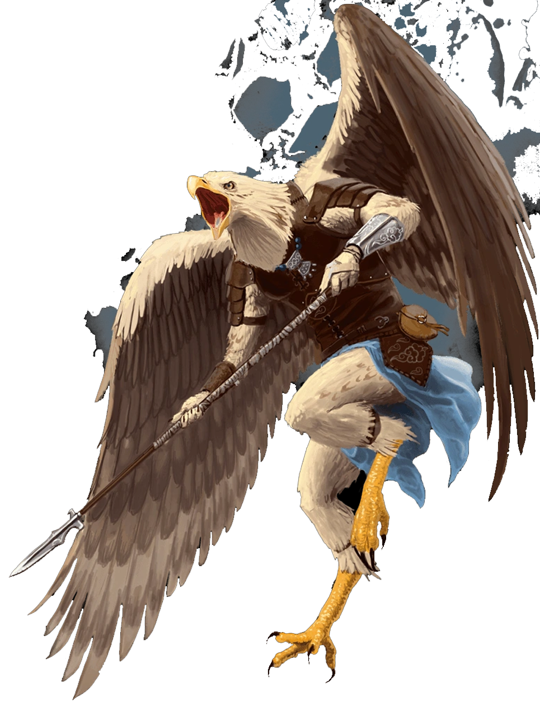- "Bird-Brains"
- "Bird-Man"
- "Caw-Caws"
- "Crow"
- "Hollowbones"
- "Parrot"
- "Pigeon"
- "Raven"
- "Vulture"
Aasimar
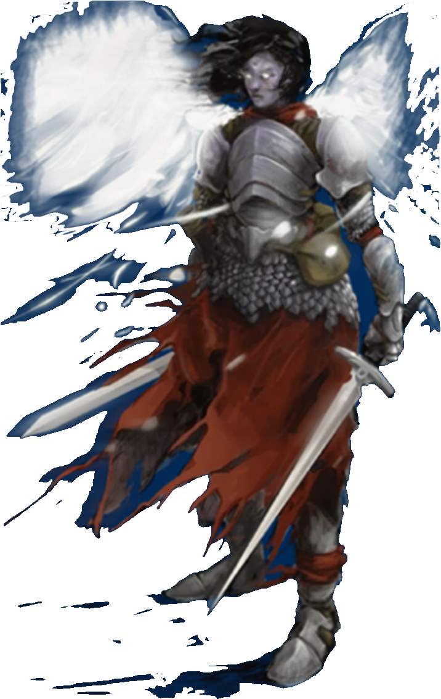- "Angel Face"
- "Birdy"
- "Chicken"
- "Chickenbrain"
- "God's Pet"
- "Goody Two Shoes"
- "Wingless Earthbound Bastard Half Breed"
Dragonborns
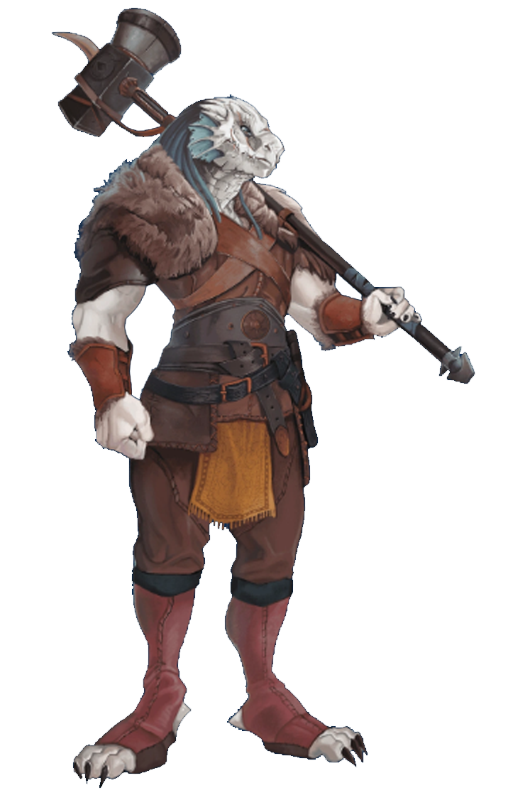- "Boot"
- "Fake-Drakes"
- "Lizardbrain"
- "Scalebacks"
- "Tall Kobold"
- "Walking Purse"
- "Man-Eater"
- "Snakeskin"
- "Wyrm Wannabe"
Drow
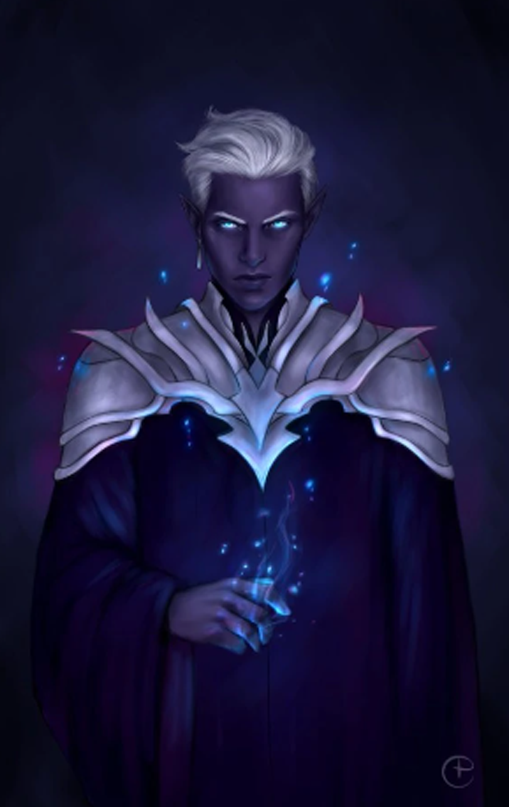- "Ash Face"
- "Cavemen"
- "Dirt Elves"
- "Dwarven Imposter"
- "Filth Skin"
- "Murker"
- "Spider Kisser"
- "Tall Dwarfs"
- "Underscum"
Dwarves
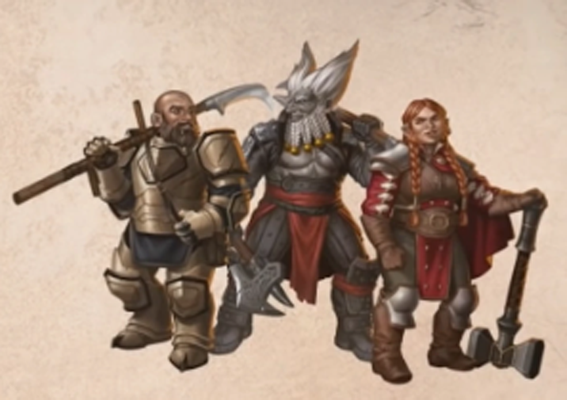- "Angry Footstool"
- "Beard-Goblin"
- "Cave Hippo"
- "Copper Polisher"
- "Dirt Licker"
- "Gold Digger"
- "Hammer Midget"
- "Pubic Face"
- "Stone Shitter"
Elves
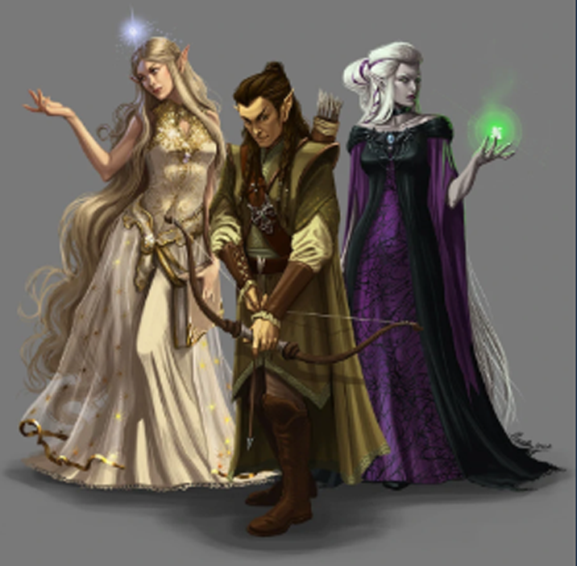- "Bark Sniffer"
- "Dandilion Licker"
- "Farie Wannabe"
- "Pointy Ears"
- "Light Weights"
- "Tree Fucker"
- "Waste of Immortality"
- "Wingless Farie"
- "Wood-Heads"
Gnomes
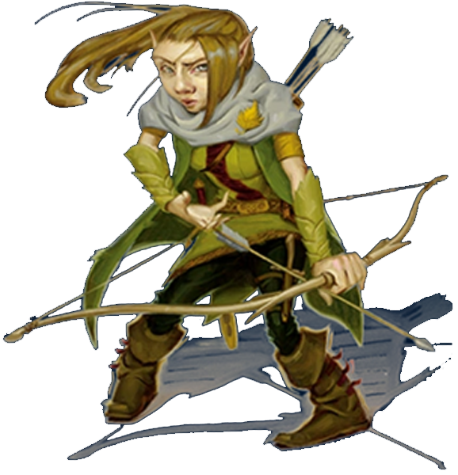- "Ankle Biter"
- "Cone Head"
- "Discount Dwarf"
- "Fat Fairy"
- "KneeLicker"
- "Lawn Ornaments"
- "Mini-Elf"
- "Mushroom Sucker"
- "TinkerTots"
Halflings
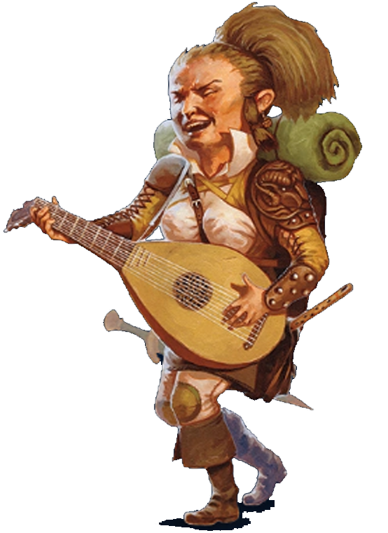- "Arm Rest"
- "Children"
- "Dwarfling"
- "Halfman"
- "Hobbit"
- "Leatherfoot"
- "Shin Licker"
- "Small Fry"
- "Sticky Fingers"
Humans
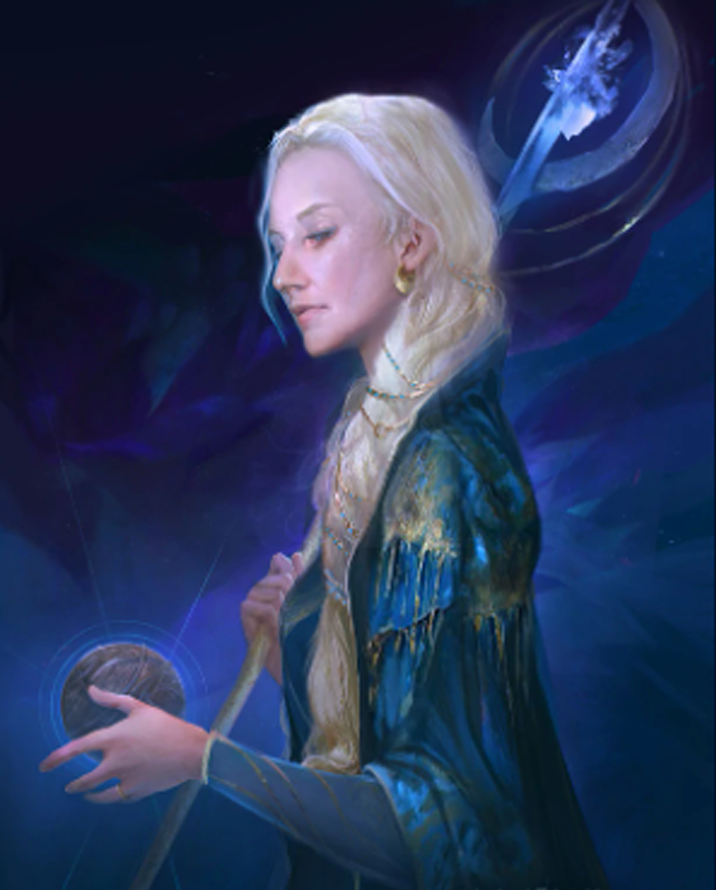- "Cattle"
- "Humie"
- "Monkeys"
- "Pig Skin"
- "Pinks"
- "Short Life"
- "Smooth Skin"
- "Whore-Race"
- "World-Blight"
Orcs/Half-Orcs
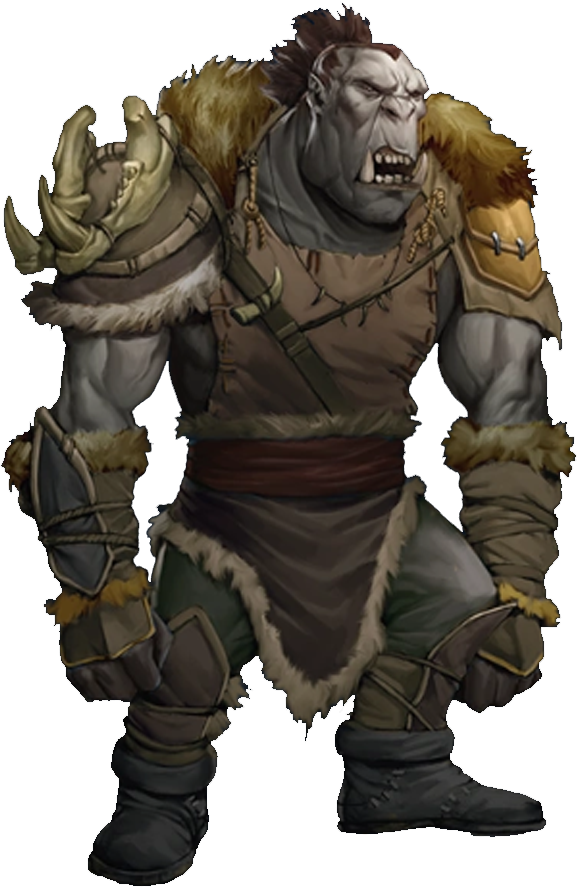- "Broccoli Head"
- "Green Ape"
- "Gronk"
- "Grunt"
- "Lumberfoot"
- "Pigface"
- "Slimeskin"
- "Tusk Face"
- "Green Beast"
Tabaxi
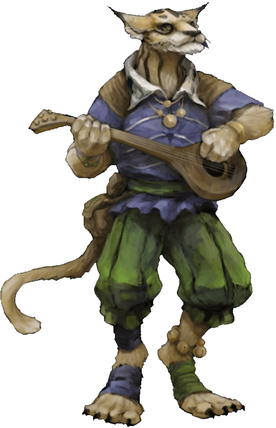- "Cat"
- "Dog Lover"
- "Fleabag"
- "Hairball"
- "Milk Drinker"
- "Worm Farm"
Tieflings
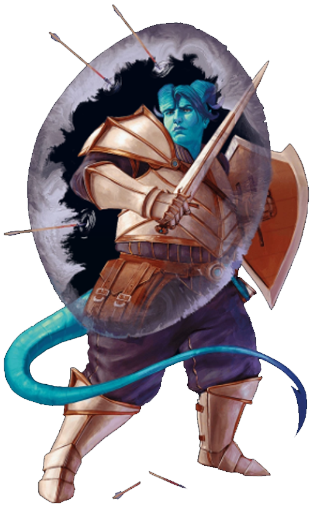- "Bullheads"
- "Demon Child"
- "Devil Bastard"
- "Failbirth"
- "Goatface"
- "Half-Hells"
- "Hellspawn"
- "Tainted Ones"
- "Ubirth"